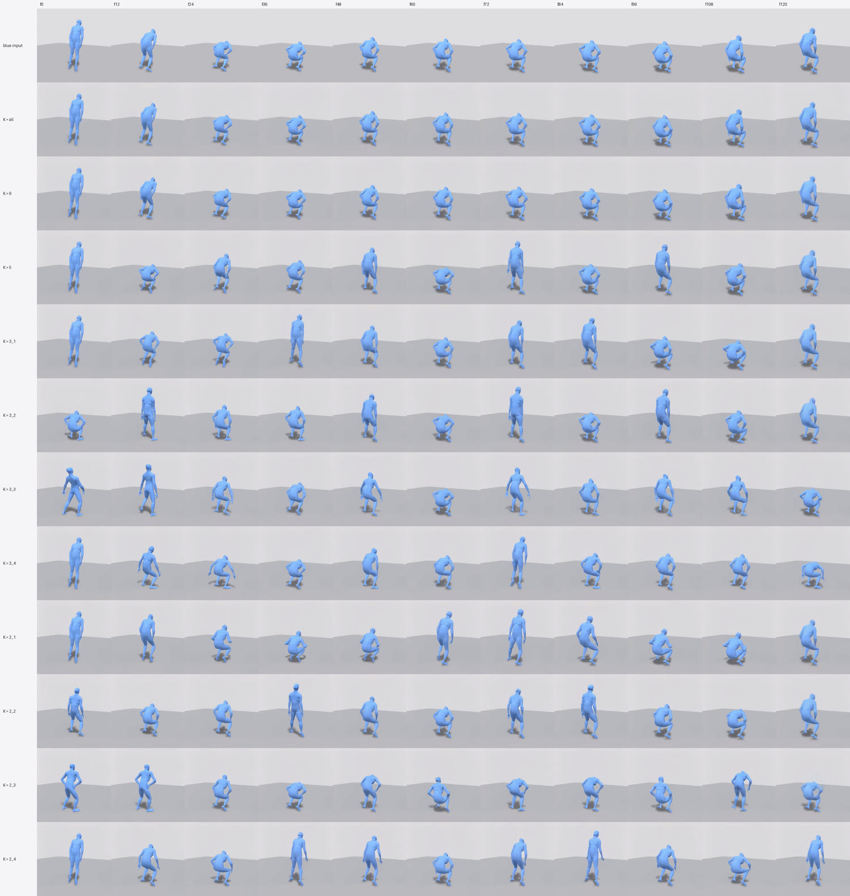
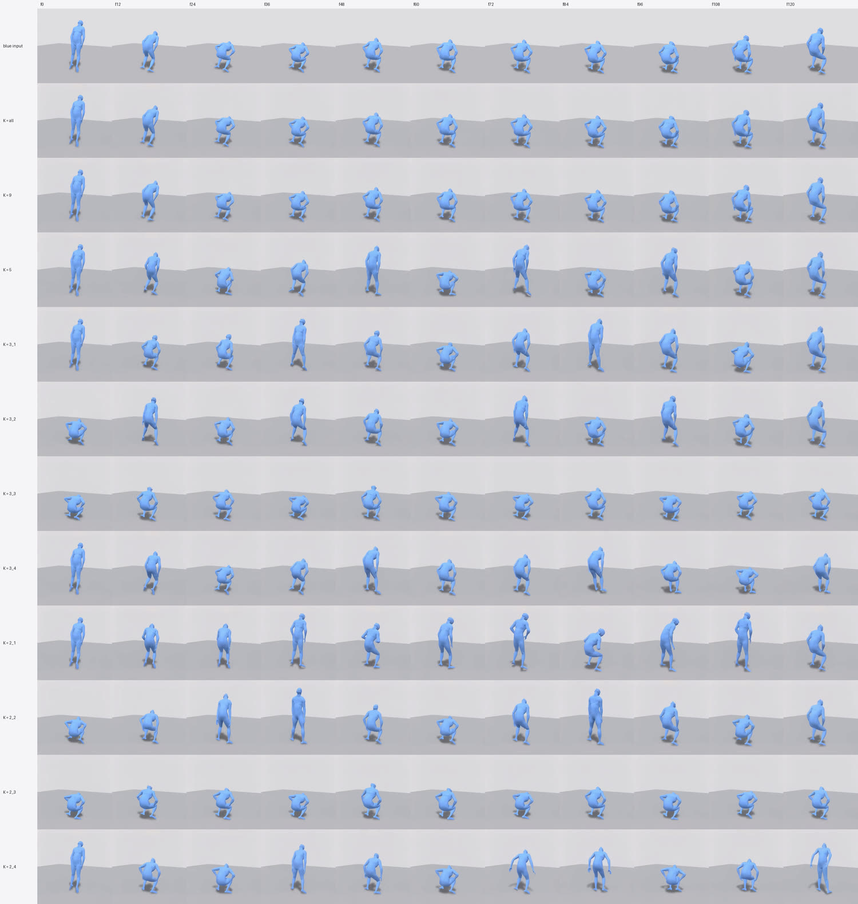

Exp 2 · Strong vs. loose control — how much motion does the video model add?
Result 5 — squat
"A person squats down." The clearest re-timing in the sweep. MotionGPT3 drops into a squat and holds the bottom for four seconds; from K = 5 downward the video model refuses that and turns it into repeated reps.
What went in#
MotionGPT3 drops into a squat and holds the bottom position for four seconds. Input energy 0.053 on both seeds — most of the clip is a static hold, so there is very little frame-to-frame change.
A four-second hold at the bottom of a squat is not how people squat. It is a plausible reading of the sentence and an implausible piece of human motion, which makes it the ideal input for this question.
Strong control#
Blue inputMotionGPT3 → SMPL, every frame
K = all16 frames — every 8th
K = 99 frames — every 16th
a person squats down
squat
clear effectthe beat controlled descent, bottom position, drive back up
s1234
s5678
s1234
s5678
s1234
s5678
K = all (0.89) and K = 9 (0.87). The four-second hold is reproduced exactly.
This is also one of the pairs used for
Test 2.The useful window#
Blue inputMotionGPT3 → SMPL, every frame
K = 50 · 32 · 64 · 88 · 120
K = 3_264 · 88 · 120 — head free
a person squats down
squat
clear effectthe beat controlled descent, bottom position, drive back up
s1234
s5678
s1234
s5678
s1234
s5678
K = 5 — ratio 2.78, the highest single cell in the entire sweep — and
K = 3_2 (2.63).Placement at K = 3#
K = 3_10 · 64 · 120 — both ends pinned
K = 3_264 · 88 · 120 — head free
K = 3_332 · 64 · 88 — both ends free
K = 3_40 · 32 · 64 — tail free
a person squats down
squat
clear effectthe beat controlled descent, bottom position, drive back up
s1234
s5678
s1234
s5678
s1234
s5678
s1234
s5678
3_1 1.90 · 3_2 2.63 · 3_3 2.15 · 3_4 2.40. Every placement more than
doubles the input here, including the ones that pin both ends — unique to this
prompt, and a direct consequence of the input containing so much dead time.Placement at K = 2#
K = 2_10 · 120 — both ends pinned
K = 2_264 · 120 — head free
K = 2_332 · 88 — both ends free
K = 2_40 · 64 — tail free
a person squats down
squat
clear effectthe beat controlled descent, bottom position, drive back up
s1234
s5678
s1234
s5678
s1234
s5678
s1234
s5678
2_1 1.72 · 2_2 1.58 · 2_3 2.01 · 2_4 2.29.The numbers for this prompt#
| seed | set | energy | vs. input |
|---|---|---|---|
| 5678 | 5 | 0.1587 | 3.0 |
| 1234 | 3_4 | 0.1531 | 2.899 |
| 5678 | 3_2 | 0.1467 | 2.773 |
| 5678 | 2_4 | 0.1394 | 2.636 |
| 1234 | 5 | 0.1352 | 2.562 |
| 1234 | 3_2 | 0.1318 | 2.497 |
| 1234 | 3_3 | 0.1257 | 2.381 |
| 1234 | 2_3 | 0.1225 | 2.32 |
| 5678 | 3_1 | 0.1068 | 2.019 |
| 1234 | 2_4 | 0.1021 | 1.934 |
| 5678 | 3_3 | 0.1015 | 1.918 |
| 5678 | 3_4 | 0.1006 | 1.902 |
| 5678 | 2_1 | 0.0979 | 1.852 |
| 1234 | 3_1 | 0.0936 | 1.774 |
| 5678 | 2_3 | 0.0904 | 1.709 |
| 5678 | 2_2 | 0.0863 | 1.631 |
| 1234 | 2_1 | 0.0834 | 1.579 |
| 1234 | 2_2 | 0.0812 | 1.538 |
| 1234 | all | 0.0473 | 0.895 |
| 5678 | all | 0.0469 | 0.887 |
| 1234 | 9 | 0.0465 | 0.881 |
| 5678 | 9 | 0.0453 | 0.857 |
Timing strip#
Timing stripevery condition, time-aligned
a person squats down
squat
clear effectthe beat controlled descent, bottom position, drive back up

s1234
s5678